This project is an exercise in using CSS3 transitions and jQuery to create a functioning speedometer. Another focus being on typography. The inspiration for this assignment came from this collection of speedometer sketches from 1941-2011. You can read the blog post here.
Speed-O-Meter is a combination of 3 images, some HTML, CSS transitions, (easing, rotating) and the jQuery UI slider. Some additional jQuery was needed to attach the slider to the needle and for the spacebar to control acceleration in addition to the arrow keys and clicks. —Stephanie Briones